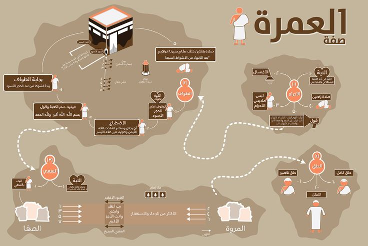
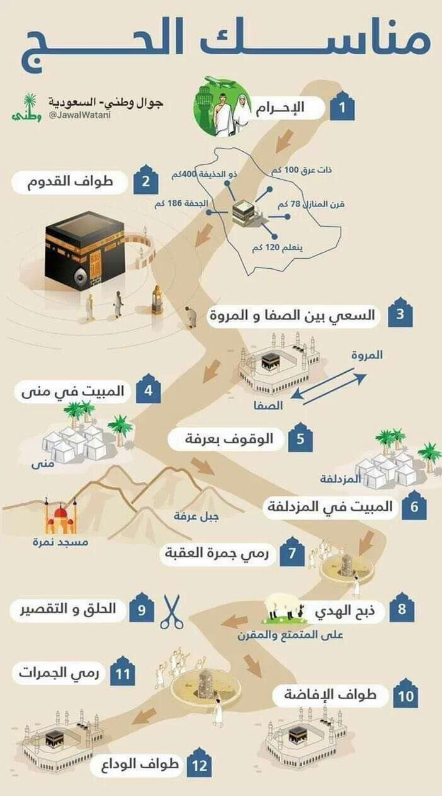

العمرة

العمرة هي زيارة بيت الله الحرام في مكة المكرمة لأداء مناسك معينة في أي وقت من السنة ما عدا أيام الحج. على الرغم من أن العمرة ليست بديلاً عن الحج، إلا أنها تحمل أجرًا عظيمًا.
مناسك العمرة:
- الإحرام: النية والدخول في مناسك العمرة من الميقات المحدد.
- الطواف: الطواف حول الكعبة المشرفة سبعة أشواط.
- السعي بين الصفا والمروة: السعي بين الجبلين سبعة أشواط.
- الحلق أو التقصير: الحلق (لرجال) أو التقصير (لنساء) بعد السعي.
العمرة تساهم في مغفرة الذنوب، كما أنها فرصة للتقرب إلى الله وزيادة التقوى.
الحج

الحج هو الركن الخامس من أركان الإسلام ويجب على المسلم البالغ العاقل القادر أن يؤديه مرة واحدة في العمر. مناسك الحج تتم في أيام محددة من شهر ذو الحجة.
مناسك الحج:
- الإحرام: الدخول في الإحرام من الميقات المخصص لكل شخص.
- الوقوف بعرفة: الوقوف في عرفة في اليوم التاسع من ذو الحجة.
- رمي الجمار: رمي الجمار في منى بعد الوقوف بعرفة.
- طواف الإفاضة: الطواف حول الكعبة المشرفة بعد رمي الجمار.
- الحلق أو التقصير: الحلق أو تقصير الشعر بعد الطواف.
- طواف الوداع: الطواف حول الكعبة قبل مغادرة مكة.
الحج يغفر الذنوب ويجعل المسلم يعود كما ولدته أمه، كما يعزز الروابط بين المسلمين من جميع أنحاء العالم.